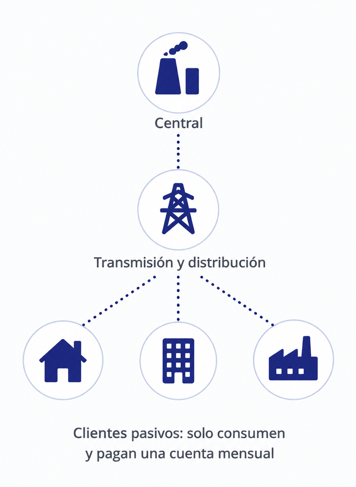
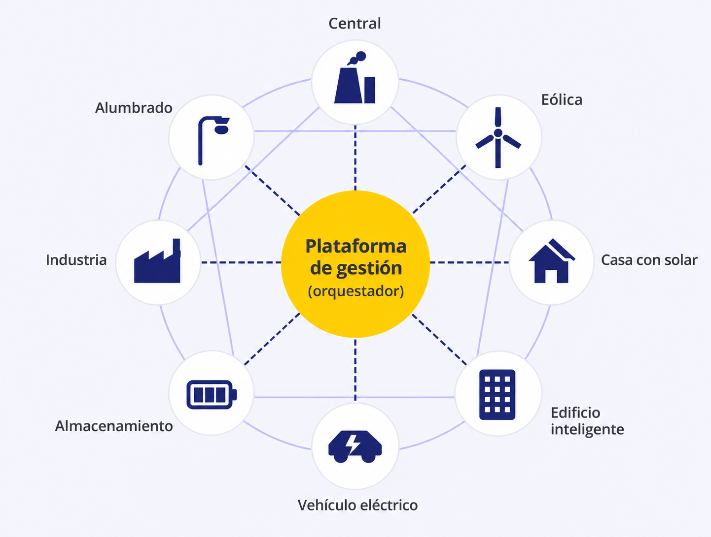
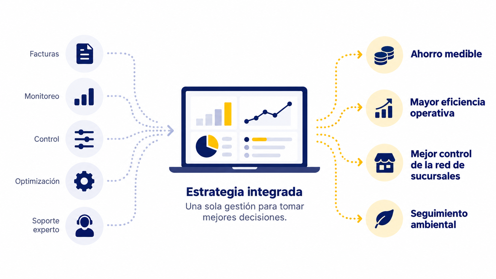

La industria energética atraviesa una transformación que va mucho más allá de las energías renovables. Los datos, la conectividad y el control del consumo están cambiando dónde se genera valor y quién tiene la capacidad de capturarlo.
Durante décadas, el sistema eléctrico funcionó bajo una lógica relativamente simple: grandes centrales generaban electricidad, las redes la distribuían y los clientes consumían y pagaban una factura.

Ese modelo está evolucionando.
En su estudio Energy Cloud 4.0: Capturing Business Value through Disruptive Energy Platforms, publicado en 2018, Navigant Consulting planteó una transformación estructural: pasar de una cadena energética lineal a un ecosistema conectado, donde energía, información y dinero circulan en múltiples direcciones.
Aunque algunas de sus proyecciones ya alcanzaron sus horizontes temporales, el estudio ofrece un marco para comprender hacia dónde evoluciona la gestión energética.
De consumidores pasivos a participantes activos
El concepto de Energy Cloud describe un sistema en el que edificios, industrias, generación renovable, baterías y vehículos eléctricos pueden interactuar entre sí mediante plataformas digitales.

En este escenario, el cliente deja de ser únicamente el destinatario final de la electricidad. Puede generar energía, almacenarla, modificar su demanda y tomar decisiones según las condiciones de operación o los precios.
Navigant identificó cuatro fuerzas detrás de esta transformación: la descarbonización, la generación distribuida, la digitalización y la movilidad eléctrica.
Su combinación cambia una pregunta fundamental para las empresas: ya no se trata solamente de cuánta energía consumen, sino de cuánto control tienen sobre ese consumo y qué valor pueden obtener de gestionarlo mejor.
El valor se mueve hacia el cliente
Una de las principales conclusiones del estudio es que una proporción creciente del valor de la industria energética podría trasladarse desde la generación centralizada hacia los servicios y tecnologías que operan cerca del consumidor.
En uno de sus escenarios para 2030, Navigant proyectaba que aproximadamente dos tercios del valor de la cadena energética se concentrarían en la distribución y la gestión del cliente, incluida la operación detrás del medidor.
Esto abre nuevas oportunidades para empresas comerciales e industriales.
Un edificio que ajusta automáticamente su climatización según la ocupación, una cadena de retail que identifica consumos anómalos entre sucursales o una industria que adapta su operación a las condiciones tarifarias tienen algo en común: utilizan información para administrar sus recursos con mayor precisión.
La gestión energética deja de limitarse al suministro y pasa a formar parte de las decisiones operativas y financieras del negocio.
Los datos son el nuevo activo estratégico
La digitalización es uno de los principales habilitadores de este cambio.
Antes, una lectura mensual del medidor podía ser suficiente para conocer el consumo total. Hoy, sensores, sistemas conectados y plataformas de análisis permiten observar qué sucede dentro de las instalaciones con mucha mayor frecuencia y detalle.
La diferencia no está únicamente en disponer de más información, sino en lo que esa información permite hacer: detectar equipos que funcionan fuera de horario, comparar instalaciones con características similares, anticipar fallas o automatizar ajustes de consumo.
Para las organizaciones con múltiples sucursales, esta capacidad adquiere especial relevancia: una decisión aplicada a cientos de instalaciones puede tener un impacto acumulado considerable.
Navigant también advertía que la ventaja competitiva no dependería necesariamente de quién tuviera más infraestructura física, sino de quién fuera capaz de conectar activos, interpretar datos y convertirlos en servicios de valor.
De vender energía a ofrecer resultados
Otro cambio importante aparece en los modelos de negocio.
El estudio destaca el crecimiento conceptual de Energy as a Service (EaaS), o energía como servicio: un modelo que reúne asesoría, tecnología, monitoreo, optimización y gestión de activos bajo una propuesta integral.
En lugar de ofrecer soluciones aisladas, el proveedor acompaña al cliente en la mejora continua de su desempeño energético.
Esto modifica también la manera de evaluar el servicio. El foco puede pasar de la tecnología instalada a los resultados alcanzados: ahorro económico, eficiencia operativa, confiabilidad y reducción de emisiones.
La integración se vuelve esencial. La información de las facturas, el monitoreo de equipos y las herramientas de control tienen mayor potencial cuando funcionan como partes de una misma estrategia.

¿Quieres convertir los datos de tu operación en decisiones y ahorros medibles?
Agenda una evaluación energética
¿Qué significa esta transformación para las empresas en Latinoamérica?
La transición no avanza al mismo ritmo en todos los mercados. La regulación, las tarifas, la infraestructura disponible y el acceso a tecnología condicionan las oportunidades de cada región.
En Chile, la Comisión Nacional de Energía (CNE) está evaluando cambios en la metodología para determinar los períodos de control de horas punta del Sistema Eléctrico Nacional, con posibles efectos a partir de 2027. Esta revisión responde a la necesidad de adaptar la regulación a un sistema eléctrico en transformación, donde los patrones de generación y consumo están cambiando. Para las empresas, el escenario refuerza la importancia de conocer cuándo y cómo consumen electricidad, anticipar posibles impactos tarifarios y contar con herramientas que permitan ajustar su operación. Una evolución que conecta directamente con la tendencia descrita en Energy Cloud 4.0: pasar de pagar por la energía a gestionarla estratégicamente.
Sin embargo, las empresas no necesitan esperar a que exista un sistema energético completamente descentralizado para aprovechar sus beneficios. Hay capacidades que ya pueden desarrollar:
- Visibilidad: conocer el consumo real de cada instalación y detectar desviaciones.
- Control: ajustar equipos y operaciones a partir de información confiable.
- Optimización: identificar oportunidades de ahorro y medir los resultados.
- Trazabilidad: contar con datos consistentes para respaldar decisiones financieras y ambientales.
En Clickie trabajamos precisamente sobre estas capacidades, mediante la integración de gestión de facturas, monitoreo energético, control remoto y análisis de datos para empresas con múltiples instalaciones.
El objetivo no es acumular información, sino facilitar decisiones que permitan reducir costos y mejorar la operación.
El futuro de la energía también se decide detrás del medidor
La transformación del sector energético suele asociarse con grandes inversiones en generación renovable, redes inteligentes o almacenamiento. Pero una parte importante del cambio ocurre dentro de los propios edificios, industrias y comercios.
Allí se toman decisiones diarias sobre climatización, iluminación, equipamiento y horarios de funcionamiento.
El planteamiento de Energy Cloud 4.0 sigue siendo relevante por una razón: muestra que la transición energética no consiste únicamente en cambiar las fuentes de generación. También implica transformar la relación de las empresas con la energía que utilizan.
El desafío ya no es solo consumir menos, sino gestionar mejor: con información, capacidad de control y resultados medibles.
El equipo Clickie conversa sobre los cambios que vienen
¿Cómo impactarán estos cambios en la gestión energética de las empresas? Nuestro CEO, el equipo comercial y el líder de Customer Success conversan sobre el nuevo escenario energético en Chile, sus desafíos y las oportunidades que abre para las empresas.
Mira la conversación completa en YouTube: Enlace próximamente.
Referencia: Navigant Consulting, Energy Cloud 4.0 — Capturing Business Value through Disruptive Energy Platforms (2018). Los escenarios y proyecciones mencionados corresponden al estudio original y no representan estimaciones actualizadas del mercado.